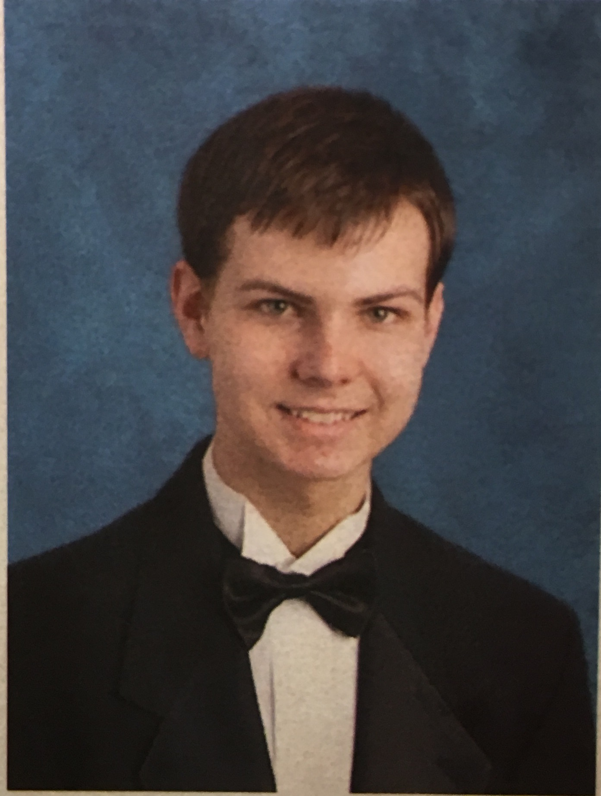

My name is Hudson Gieck. I am a senior at Bob Jones Academy. Once I graduate high school, I desire to attend Bob Jones University to study computer science. Aside from coding, I have two other hobbies that I pursue during my free time.
First, I enjoy archery. Archery is very expensive at first, but it's not very expensive to go to an archery range. Personally, I find
Saluda RIver Archeryto be a rather enjoyable place to shoot. I have a habit of naming certain belingings, so I named my bow "Nimrod," a "mighty hunter" mentioned in Genesis 10:9.
The other hobby is music. I started playing piano in third grade, and the french horn in fifth grade. Since then, I have dropped piano lessons, and started to self-teach myself trumpet. While I play in both the band and symphony at BJA, I do enjoy my time playing with the
Upstate Winds. The Upstate Winds don't require fees for attendance at concerts, so feel free to stop by if you like.